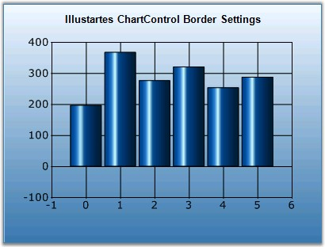
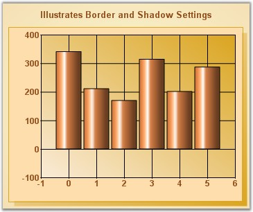

Chart Area Border
Borders of the chart area can be customized using the below border properties.
|
ChartArea Properties |
Description |
|
BorderColor |
Indicates the border color of the chart area. |
|
BorderStyle |
Indicates the border style. |
|
BorderWidth |
Specifies the width of the border. |
|
BorderAppearance |
|
|
BaseColor |
Gets or sets the color of the base. |
|
FrameThickness |
Gets or sets the frame thickness. This property setting will be effective, when SkinStyle is Frame. |
|
Interior |
Sets the interior color of the border. This property settings will be effective when SkinStyle is Sunken, Etched and Raised. |
|
SkinStyle |
Specifies the border skin style. |
|
[C#]
this.ChartWebControl1.ChartArea.BorderColor = System.Drawing.Color.Goldenrod; this.ChartWebControl1.ChartArea.BorderStyle = System.Windows.Forms.BorderStyle.FixedSingle; this.ChartWebControl1.ChartArea.BorderWidth = 1;
this.ChartWebControl1.BorderAppearance.BaseColor = System.Drawing.Color.DarkGray; //This property setting will be effective, when SkinStyle is 'Frame'. this.ChartWebControl1.BorderAppearance.FrameThickness = new Syncfusion.Windows.Forms.Chart.ChartThickness(15F, 30F, 15F, 18F); //This interior property settings will be effective when SkinStyle is Sunken, Etched and Raised. this.ChartWebControl1.BorderAppearance.Interior.ForeColor = System.Drawing.Color.Maroon; this.ChartWebControl1.BorderAppearance.SkinStyle = Syncfusion.Windows.Forms.Chart.ChartBorderSkinStyle.Raised; |
|
[VB.NET]
Me.ChartWebControl1.ChartArea.BorderColor = System.Drawing.Color.Goldenrod Me.ChartWebControl1.ChartArea.BorderStyle = System.Windows.Forms.BorderStyle.FixedSingle Me.ChartWebControl1.ChartArea.BorderWidth = 1
Me.ChartWebControl1.BorderAppearance.BaseColor = System.Drawing.Color.DarkGray 'This property setting will be effective, when SkinStyle is 'Frame'. Me.ChartWebControl1.BorderAppearance.FrameThickness = New Syncfusion.Windows.Forms.Chart.ChartThickness(15F, 30F, 15F, 18F) 'This interior property settings will be effective when SkinStyle is Sunken, Etched and Raised. Me.ChartWebControl1.BorderAppearance.Interior.ForeColor = System.Drawing.Color.Maroon Me.ChartWebControl1.BorderAppearance.SkinStyle = Syncfusion.Windows.Forms.Chart.ChartBorderSkinStyle.Raised |

Figure 299: Chart with BorderStyle = "Double", BorderWidth = "1px", BorderColor = "SteelBlue"
Chart Area Shadow
The chart area can also be rendered with a shadow. Turn this feature on, by enabling the ChartAreaShadow property.
|
Chart Control Properties |
Description |
|
ChartAreaShadow |
Indicates whether chart area has a shadow. |
|
ShadowColor |
Specifies the color of the shadow. |
|
ShadowWidth |
Specifies the width of the shadow. |
|
[C#]
this.ChartWebControl1.ChartAreaShadow = true; this.ChartWebControl1.ShadowColor = new Syncfusion.Drawing.BrushInfo(Syncfusion.Drawing.GradientStyle.ForwardDiagonal, System.Drawing.Color.AntiqueWhite, System.Drawing.Color.Goldenrod); this.ChartWebControl1.ShadowWidth = 7; |
|
[VB.NET]
Me.ChartWebControl1.ChartAreaShadow = True Me.ChartWebControl1.ShadowColor = New Syncfusion.Drawing.BrushInfo(Syncfusion.Drawing.GradientStyle.ForwardDiagonal, System.Drawing.Color.AntiqueWhite, System.Drawing.Color.Goldenrod) Me.ChartWebControl1.ShadowWidth = 7 |

Figure 300: Chart Area Shadow Settings
Chart Area Margins
Margin for the chart area can be controlled using ChartAreaMargins property. It indicates the margin that will be deduced from Chart Area's representation rectangle.
|
Chart Control Properties |
Description |
|
ChartAreaMargins |
Specifies the amount of pixels between the chart area border and the chart plot area.
Default is {10, 10, 10, 10}. |
|
[C#]
this.ChartWebControl1.ChartAreaMargins = new Syncfusion.Windows.Forms.Chart.ChartMargins(10, 10, 10, 20); |
|
[VB.NET]
Me.ChartWebControl1.ChartAreaMargins = New Syncfusion.Windows.Forms.Chart.ChartMargins(10, 10, 10, 20) |
ChartPlot Area Margins
The margins for ChartPlotArea is specified in ChartPlotAreaMargins property.
|
ChartControl Properties |
Description |
|
ChartPlotAreaMargins |
Indicates the margin of the axis labels. This margin is supported for left, Top, Right and Bottom side of the chart. This property works only if EdgeLabelsDrawingMode property is set to Shift.
Default is {10, 10, 10, 10}. |
|
AdjustPlotAreaMargins |
Gets / sets the mode of drawing the edge labels. Default is AutoSet. |
|
EdgeLabelsDrawingMode |
Gets or sets the edge labels drawing mode. |
|
[C#]
this.ChartWebControl1.PrimaryYAxis.EdgeLabelsDrawingMode = Syncfusion.Windows.Forms.Chart.ChartAxisEdgeLabelsDrawingMode.Shift; this.ChartWebControl1.ChartArea.AdjustPlotAreaMargins = Syncfusion.Windows.Forms.Chart.ChartSetMode.UserSet; this.ChartWebControl1.ChartArea.ChartPlotAreaMargins.Left = 200; |
|
[VB.NET]
Me.ChartWebControl1.PrimaryYAxis.EdgeLabelsDrawingMode = Syncfusion.Windows.Forms.Chart.ChartAxisEdgeLabelsDrawingMode.Shift Me.ChartWebControl1.ChartArea.AdjustPlotAreaMargins = Syncfusion.Windows.Forms.Chart.ChartSetMode.UserSet Me.ChartWebControl1.ChartArea.ChartPlotAreaMargins.Left = 200 |
Spacing between elements
The spacing between elements in the chart is specified using the ElementsSpacing property. For example, the space between the chart right border and legend right border if LegendPosition is set to Right.
|
Chart Control Properties |
Description |
|
ElementsSpacing |
Specifies the spacing between the elements in the chart. Default is 20. |